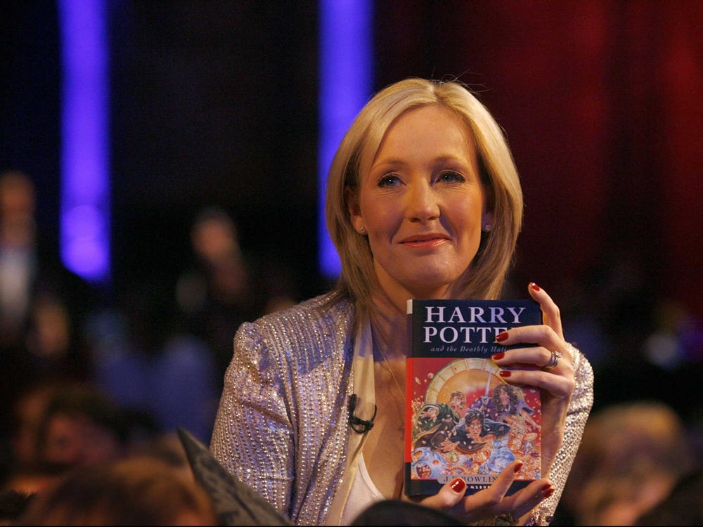

HARRY POTTER FAN Club

The world is divided between Harry Potter fans and those who consider bespectacled boy wizards a proper load of
Hogwarts.
This year marks the 20th anniversary of the first novel in JK Rowling’s 400-million selling series, and the
fanfare has been predictably deafening. Yet among Potter agnostics the saga’s hallowed status is a source of
ongoing bafflement.
His friends
The Trio, sometimes known as the Golden Trio, was the popular name given to the gang of three best friends and
former Gryffindor students at Hogwarts School of Witchcraft and Wizardry, being Harry Potter, Ronald Weasley, and
Hermione Granger. The trio was allied with the Order of the Phoenix, Dumbledore's Army, and Albus Dumbledore, and
in their adult lives and careers, the British Ministry of Magic.
Is Harry Potter a true story?
While no, there is no actual Harry Potter, he was based on a real person! JK Rowling drew her inspiration for
The Boy Who Lived from her neighbor Ian Potter who lived just four doors down from Rowling when she was a child.

J K Rowling , The Author of Harry Potter